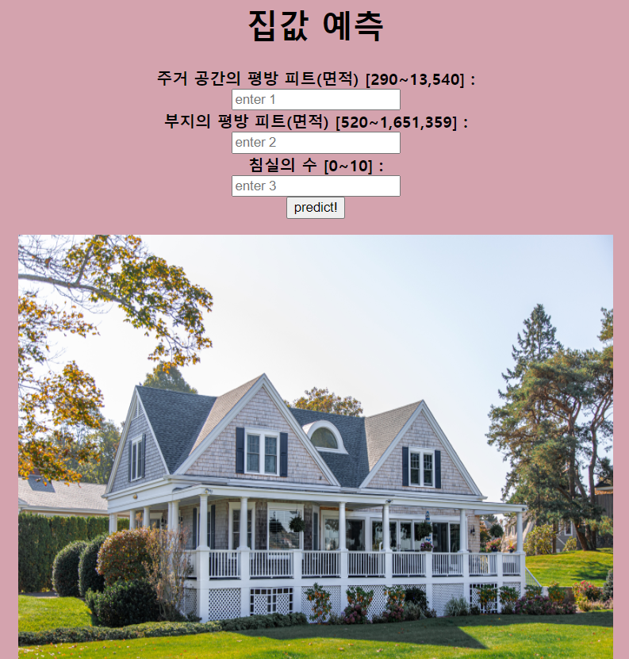

Flask(플라스크) 활용한 머신러닝 웹 서비스 구축
학습 목표
가. Flask를 활용한 머신러닝 웹 서비스를 구현할 수 있다.
학습 내용
가. 가상환경 만들기
나. 필수 라이브러리 설치
다. 전체 폴더 구조
라. house.py 소스 코드
마. flask_app 소스 코드
사. home.html 소스 코드
아. result.html 소스 코드
자. 실행
목차
가. 가상환경 만들기
conda create -n flask_house python=3.8
conda activate flask_house
나. 필수 라이브러리 설치
[방법1] requirements.txt 가 있을 경우,
pip install -r requirements.txt
requirements.txt 내용
Flask
Jinja2
scikit-learn
scipy
virtualenv
pillow
imageio
numpy
pandas
[방법2]
pip install flask==2.1.3 Jinja2
pip install scikit-learn seaborn pillow imageio pandas virtualenv
pip install numpy==1.23.1
[리스트 확인]
conda list
(flask_house) C:\Users\totofriend>conda list
# packages in environment at C:\Users\totofriend\anaconda3\envs\flask_house:
#
# Name Version Build Channel
ca-certificates 2022.07.19 haa95532_0
certifi 2022.9.24 py38haa95532_0
click 8.1.3 pypi_0 pypi
colorama 0.4.5 pypi_0 pypi
contourpy 1.0.5 pypi_0 pypi
cycler 0.11.0 pypi_0 pypi
distlib 0.3.6 pypi_0 pypi
filelock 3.8.0 pypi_0 pypi
flask 2.1.3 pypi_0 pypi
fonttools 4.37.4 pypi_0 pypi
imageio 2.22.1 pypi_0 pypi
importlib-metadata 5.0.0 pypi_0 pypi
itsdangerous 2.1.2 pypi_0 pypi
jinja2 3.1.2 pypi_0 pypi
joblib 1.2.0 pypi_0 pypi
kiwisolver 1.4.4 pypi_0 pypi
markupsafe 2.1.1 pypi_0 pypi
matplotlib 3.6.1 pypi_0 pypi
numpy 1.23.1 pypi_0 pypi
openssl 1.1.1q h2bbff1b_0
packaging 21.3 pypi_0 pypi
pandas 1.5.0 pypi_0 pypi
pillow 9.2.0 pypi_0 pypi
pip 22.2.2 py38haa95532_0
platformdirs 2.5.2 pypi_0 pypi
pyparsing 3.0.9 pypi_0 pypi
python 3.8.13 h6244533_0
python-dateutil 2.8.2 pypi_0 pypi
pytz 2022.4 pypi_0 pypi
scikit-learn 1.1.2 pypi_0 pypi
scipy 1.9.2 pypi_0 pypi
seaborn 0.12.0 pypi_0 pypi
setuptools 63.4.1 py38haa95532_0
six 1.16.0 pypi_0 pypi
sqlite 3.39.3 h2bbff1b_0
threadpoolctl 3.1.0 pypi_0 pypi
vc 14.2 h21ff451_1
virtualenv 20.16.5 pypi_0 pypi
vs2015_runtime 14.27.29016 h5e58377_2
werkzeug 2.2.2 pypi_0 pypi
wheel 0.37.1 pyhd3eb1b0_0
wincertstore 0.2 py38haa95532_2
zipp 3.9.0 pypi_0 pypi
다. 전체 폴더 구조
[리스트 확인]
----[폴더명]
----- [폴더] data
----- [폴더] model
----- [폴더] static
----- [폴더] templates
----- house.py
----- flask_app.py
iris.py : 파일을 불러오고, 실제 모델 구축 후, 이를 pickle 파일로 저장한다.
flask_app.py : iris.py에서 생성한 pickle파일을 불러온다. Flask App을 띄운다.
----- [폴더] data : 데이터가 있는 폴더
(예) house_test.csv, house_train.csv
----- [폴더] model : 학습된 모델 저장할 폴더
(예) house_rf.pkl
----- [폴더] static : 참조할 이미지 폴더. 이곳에서 이미지를 불러와 웹에서 보여주게 된다.
(예) house01_2210.jpg
----- [폴더] templates : 첫 웹 페이지와 데이터 입력 후, 실행될 웹 html 파일 저장 폴더
start.html, result.html
라. house.py 소스 코드
#%% 01. 라이브러리 불러오기
import time
import os
import pandas as pd
import pickle
from sklearn.ensemble import RandomForestRegressor
from sklearn.model_selection import train_test_split
start_time = time.time()
#%% 02. 데이터 불러오기
path = os.path.join(os.getcwd(), "data")
print(path)
train = pd.read_csv(path + "\\house_train.csv")
test = pd.read_csv(path + "\\house_test.csv")
print( train.shape, test.shape )
print( train.columns, test.columns )
print( train.head(), test.head() )
#%% 03 데이터 나누기 - 입력, 출력
sel = ['sqft_living', 'sqft_lot', 'bedrooms'] # 'bedrooms' , 'bathrooms',
X = train[sel]
y = train['price']
print("data value : ", X.describe())
X_train, X_test, y_train, y_test = train_test_split(X, y,
random_state=42)
#%% 04 모델 구축 및 학습, 모델 저장
model = RandomForestRegressor(n_estimators=5, random_state=2) # 5개의 트리
print( model.fit(X_train, y_train) )
print("학습용 데이터 셋, 테스트용 데이터 셋")
print( model.score(X_train, y_train))
print( model.score(X_test, y_test))
pickle.dump(model, open('./model/house_rf.pkl', 'wb'))
print("시간 (초): ", time.time() - start_time )
마. flask_app 소스 코드
#%% 01. 라이브러리 불러오기
from flask import Flask, render_template, request
import pickle
import numpy as np
#%% 02 학습된 모델 가져오기
model = pickle.load(open('./model/house_rf.pkl', 'rb'))
#%% 03 플라스크 사용을 위한 준비
app = Flask(__name__)
#%% 04 플라스크 앱의 루트 디렉터리를 초기화
@app.route('/')
def main():
return render_template('start.html')
#%% 05 초기 웹 페이지에서 submit 했을 때 실행
# request.form['']을 사용하여 HTML 페이지에서 입력한 데이터를 가져온다.
# 예측값에 따라 어떤 텍스트와 이미지를 보낼지, result.html에 설정.
@app.route('/predict', methods=['POST'])
def home():
val1 = request.form['a'] # sqft_living 주거 공간의 평방 피트(면적)
val2 = request.form['b'] # sqft_lot 부지의 평방 피트(면적)
val3 = request.form['c'] # bedrooms 침실의 수
val1 = int(val1);
val2 = int(val2);
val3 = int(val3);
arr = np.array([[val1, val2, val3]])
pred = model.predict(arr)
# 렌더링할 html 파일명, 전달할 변수
return render_template('result.html', data=pred)
# 05 직접 실행된 경우, 앱을 디버그 on 모드로 실행
if __name__ == "__main__":
app.run(debug=True)
사. start.html 소스 코드
<html>
<body bgcolor=#d4a3ae>
<center>
<h1> 집값 예측 </h1>
<form method="POST", action="{{url_for('home')}}">
<div align="left">
<b>
<div width="400">주거 공간의 평방 피트(면적) [290~13,540] : </div> <input type="text", name='a', placeholder="enter 1">
<div width="400">부지의 평방 피트(면적) [520~1,651,359] :</div> <input type="text", name='b', placeholder="enter 2">
<div width="400">침실의 수 [0~10] : </div> <input type="text", name='c', placeholder="enter 3">
</b>
</div>
<input type="submit" , value='predict!' >
</form>
<img src='static\house01_2210.jpg' alt="house" width="600" height="500">
</center>
</body>
</html>
아. result.html 소스 코드
<html>
<body bgcolor=#a3cfb4>
<center>
<h1> 예측한 집값은 얼마일까요? </h1>
{%if data > 0%}
<h2>예측 집값 : {{data}}</h2>
<img src='static\house01_2210.jpg' alt="house" width="400" height="400">
{%endif%}
<a href='/'>go back to home page</a>
</center>
</body>
</html>
자. 실행
01. house.py을 실행
[폴더] model에 학습된 모델 파일이 저장됩니다.
02. flask_app.py을 실행
* 모델을 불러오고, flask app을 실행시킵니다.
* Serving Flask app 'flask_app' (lazy loading)
* Environment: production
WARNING: This is a development server. Do not use it in a production deployment.
Use a production WSGI server instead.
* Debug mode: on
WARNING: This is a development server. Do not use it in a production deployment. Use a production WSGI server instead.
* Running on http://127.0.0.1:5000
Press CTRL+C to quit
* Restarting with watchdog (windowsapi)
* Debugger is active!
03. 웹페이지 URL을 웹 사이트에 입력

04 입력란에 값을 입력 후, predict!를 버튼을 선택하면 예상 결과가 나오게 됩니다.
_활용한_머신러닝_웹서비스구축(2)_files/Image [1].png)
_활용한_머신러닝_웹서비스구축(2)_files/Image [2].png)